Abstract
학습의 약점이 드러나는 경계에 모델을 배치한다
이 강연의 핵심은 모델 기반 제어와 학습 기반 제어 중 하나를 선택하는 것이 아니다. 두 접근이 가장 강한 역할을 분리해 배치하면 로봇 학습의 데이터 희소성과 성능 보증 부재를 동시에 줄일 수 있다는 주장이다.
발표자는 이를 세 사례로 논증한다. 첫째, Neural Lyapunov Control은 제어기·상태 관측기·Lyapunov 인증서를 함께 학습하고 완전한 신경망 검증기로 안정성 조건을 확인한다. 둘째, PhysicsGen은 소수의 인간 시연을 궤적 최적화와 물리 파라미터 섭동에 결합해 접촉이 풍부한 조작 궤적을 증강한다. 셋째, OmniRetarget은 사람·로봇·물체·지형 사이의 상대적 상호작용을 mesh와 Laplacian 좌표로 보존해 전신 로코-매니퓰레이션용 기준 모션을 만든다.
세 연구를 관통하는 설계 원칙은 명확하다. 모델은 신경 정책을 대체하지 않는다. 대신 제약을 명시하고, 실패 상태를 찾아내고, 물리적으로 실현 가능한 데이터를 합성하며, 학습 결과를 검증하는 경계 장치로 작동한다.
small 영어 모델로 전사한
476개 구간을 1차 언어 근거로 사용했다. YouTube 자동 자막 파일은 HTTP 429 제한으로 확보하지
못했다. 기술 용어·프로젝트명·도식은 영상 화면과 대조했으며, 360p 캡처에서 판독하기 어려운
개별 수치는 옮기지 않았다.
Key Findings
이 강연에서 가져가야 할 다섯 가지
모델 대 학습이 아니라 역할 분담이다
모델 기반 도구는 계획·제약·검증을, 학습은 표현·적응·확장을 맡는다. 결합 지점은 학습 파이프라인의 병목이다.
데이터 품질이 학습 복잡도를 결정한다
결함 있는 기준 모션을 복잡한 보상으로 수선하기보다, 최적화로 데이터 자체를 고치면 RL과 sim-to-real이 단순해진다.
상호작용이 보존해야 할 기본 단위다
전신 작업에서는 관절 좌표보다 손–물체, 발–지형, 몸–장면의 상대 관계가 성공을 더 직접적으로 결정한다.
인증서는 학습 이후의 도장만이 아니다
안정성 위반 반례를 다시 데이터로 넣으면, 검증 장치가 학습 과정의 능동적 데이터 생성기로 바뀐다.
다음 병목은 embodied fidelity다
인터넷 영상은 크고 다양하지만 접촉·마찰·깊이 정보가 거칠다. 대규모 원천을 고품질 로봇 궤적으로 변환하고 지각과 연결하는 일이 남아 있다.
좋은 모델은 학습을 몰아내지 않는다. 학습이 어디에서 실패하면 안 되는지를 구조화한다.
강연 전체 논지를 압축한 편집자 요약
Framing the Problem
대립을 멈추면 병목이 보인다
정교한 손 조작에서 전신 이동과 물체 접촉을 함께 다루는 로코-매니퓰레이션으로 갈수록, 로봇은 긴 시간 동안 접촉을 만들고 끊으며 균형과 과제 목표를 동시에 지켜야 한다.
학습 기반 제어는 강화학습, 모방학습, 파운데이션 모델이라는 세 축에서 빠르게 확장됐다. 그러나 강화학습은 보상 설계와 탐색 비용에 민감하고, 모방학습은 고품질 시연과 분포 밖 일반화에 의존한다. 파운데이션 모델 역시 풍부한 의미 지식을 제공하지만 미세한 접촉과 물리 실행 능력은 학습 데이터의 품질과 해상도에 묶인다.
반대로 모델 기반 방법은 계산 구조와 보증을 제공하지만 정확한 동역학 모델과 상태 추정이 필요하고, 복잡한 접촉 시스템을 직접 수식화해 푸는 비용이 높다. 강연은 이 약점 목록을 승패표로 쓰지 않는다. 각 약점이 다른 접근의 강점과 연결되는 접합부로 읽는다.
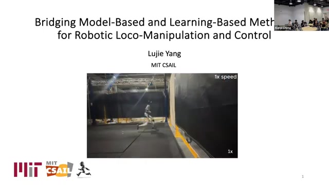
과제 범위의 확장. 손끝의 덱스터리티에서 이동과 전신 협응을 포함한 로코-매니퓰레이션으로 문제 규모가 커진다.
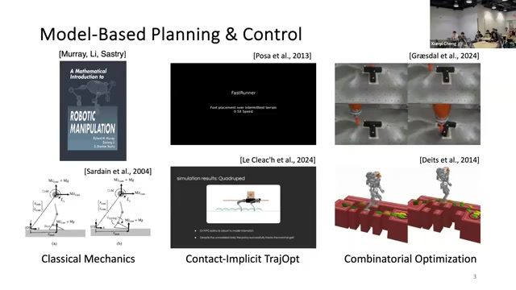
학습 기반 제어의 세 계열. 각각의 확장성은 보상, 시연, 학습 데이터라는 서로 다른 병목과 연결된다.
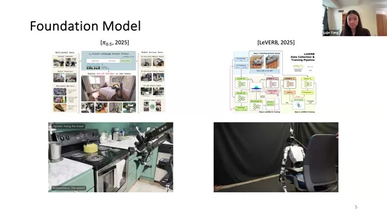
상보적 약점. 모델 기반 방법의 구조·보증과 학습 기반 방법의 유연성·표현력이 정확히 반대편의 약점을 보완한다.
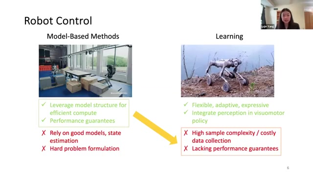
세 기여의 지도. 하나는 성능 보증, 두 개는 데이터 생성 문제를 겨냥한다.
| 연결 장치 | 주요 병목 | 모델 기반 요소 | 학습 요소 | 기대 효과 |
|---|---|---|---|---|
| Neural Lyapunov Control | 안정성 보증 부재 | Lyapunov 조건, 불변집합, 완전 검증 | 신경 제어기·관측기·인증서 공동 학습 | 검증 가능한 출력 피드백 제어 |
| PhysicsGen | 접촉 조작 데이터 부족 | 궤적 최적화, 동역학·입력 제약 | 시연 기반 정책, diffusion policy | 물리적으로 실현 가능한 데이터 증강 |
| OmniRetarget | 전신 상호작용 손실 | Interaction mesh, Laplacian 좌표, 기구학 제약 | Imitation-guided RL | 깨끗한 기준 모션과 단순한 보상 구성 |
Bridge One · Performance Guarantees
인증서가 반례를 찾고, 반례가 정책을 가르친다
첫 번째 다리는 안정성 조건을 학습의 외부 평가 기준에 머물게 하지 않고, 제어기와 관측기를 개선하는 데이터 생성 루프 안으로 가져오는 것이다.
Lyapunov 함수는 평형점에서 멀어진 정도를 나타내는 에너지와 비슷하게 해석할 수 있다. 평형점을 제외한 상태에서 함수값이 양수이고, 시스템이 한 단계 진행할 때마다 값이 감소한다면 상태가 평형으로 수렴한다. 제안 방식은 양의 조건을 함수 구조로 만족시키고, 감소 조건을 학습과 검증의 핵심 대상으로 삼는다.
중요한 변화는 검증의 역할이다. 무작위 상태를 한 단계 전개해 안정성 조건을 위반하는 지점을 찾고, 이 반례를 데이터 버퍼에 넣어 제어기·관측기·Lyapunov 함수를 다시 학습한다. 마지막에는 GPU 가속 완전 신경망 검증기를 사용해 compact region 안의 무한히 많은 상태에 대해 조건을 확인한다.
-
후보 시스템을 공동 학습한다 신경 제어기, 상태 관측기, Lyapunov 인증서가 하나의 폐루프를 이룬다.
-
안정성 위반 상태를 탐색한다 샘플 전개 또는 검증기가 감소 조건을 깨는 반례를 찾는다.
-
반례를 다음 학습 데이터로 사용한다 정책이 실제로 취약한 경계 근처에 학습 노력을 집중한다.
-
관심 영역 전체를 사후 인증한다 경험적 성공률을 넘어 명시한 영역에서의 결정론적 조건을 확인한다.
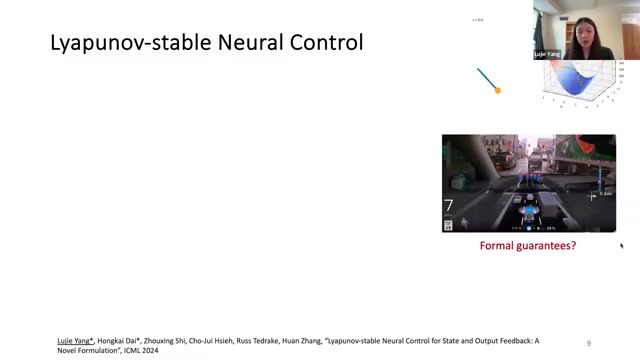
부분 관측으로의 확장. 상태 피드백을 넘어 센서 관측으로 상태를 추정하는 출력 피드백 시스템을 대상으로 한다.
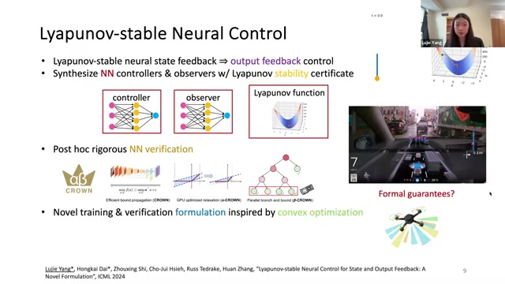
두 안정성 조건. 평형점 밖에서의 양수성과 시간에 따른 감소가 수렴의 핵심이다.
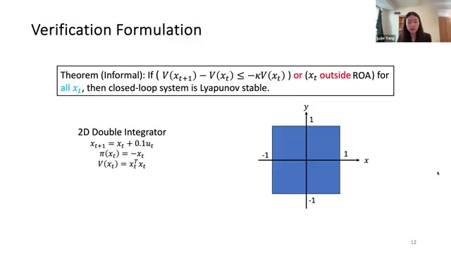
더 넓은 인증 영역. 불필요한 영역 검증을 제외하는 조건으로 기존 부분수준집합보다 큰 불변집합 전체를 목표로 한다.
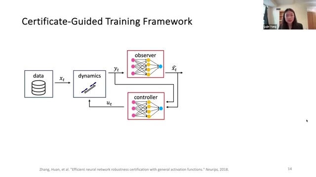
Certificate-guided training. 인증서가 실패 상태를 찾아내는 능동적 학습 장치가 된다.
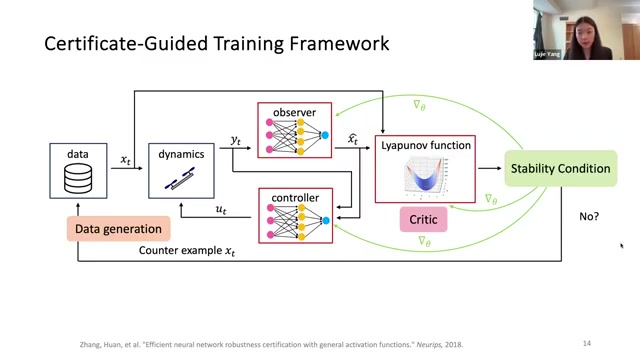
저차원 검증 결과. 전도진자·경로 추종과 LiDAR 기반 2D 쿼드로터 사례가 제시된다.
이 접근은 “보증 가능한 학습 제어”의 설득력 있는 형태지만 적용 경계도 분명하다. 완전한 형식 인증에는 폐형식 동역학이 필요하며, 휴머노이드나 사족보행처럼 상태 차원이 높고 접촉 모드가 많은 시스템에서는 정책 성능과 검증 가능성 사이의 절충이 급격히 커진다. 따라서 이 다리는 모든 로봇을 즉시 인증하는 해법이라기보다, 검증 가능한 영역을 명시하고 확대하는 방법론으로 읽는 편이 정확하다.
Bridge Two · PhysicsGen
이미지가 아니라 물리적으로 가능한 궤적을 증강한다
접촉이 풍부한 장기 조작에서 인간 시연은 전역적 경로를 제시하고, 궤적 최적화는 그 주변을 동역학적으로 가능한 과제 분포로 확장한다.
대규모 원격조작이나 외골격을 통한 물리 데이터 수집은 비용과 시간이 크다. 기존 데이터 증강은 배경, 물체 외형, 의미 조건과 같은 시각적 변형에 집중하는 경우가 많다. 그러나 밀기, 돌리기, 재접촉하기처럼 접촉 상태가 계속 바뀌는 조작에서는 이미지가 그럴듯한지만으로 충분하지 않다. 생성된 궤적이 로봇의 관절 한계, 입력 한계, 충돌과 동역학을 만족해야 한다.
PhysicsGen은 인간 시연과 최적화를 직렬로 연결한다. 시연은 어려운 장기 과제에 대한 좋은 초기 추측을 제공하고, 최적화는 embodiment와 물성 차이 때문에 발생한 동역학적 불가능성을 수정한다. 이후 물체 크기·마찰·질량, 로봇 강성, 초기 상태를 섭동하고 문제를 다시 풀어 하나의 시연 주변에 물리적으로 일관된 데이터 분포를 만든다.
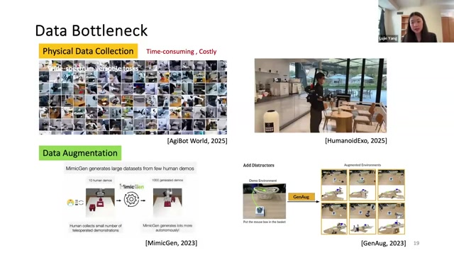
데이터 병목의 두 기존 해법. 사람을 투입하는 물리 수집은 비싸고, 시각 중심 증강은 접촉 동역학을 충분히 다루지 못한다.
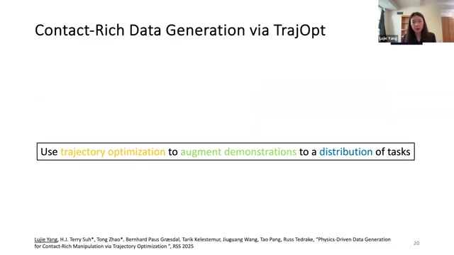
PhysicsGen의 핵심. 시연이 전역적 안내를, 궤적 최적화가 국소적 물리 일관성을 제공한다.
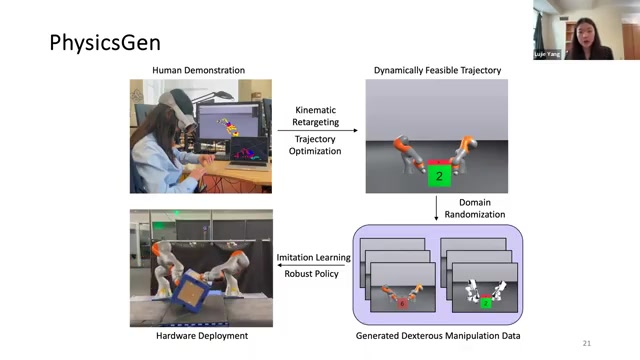
전체 파이프라인. 시연, 재표적화, 최적화, domain randomization, 정책 학습과 실제 배치가 연결된다.
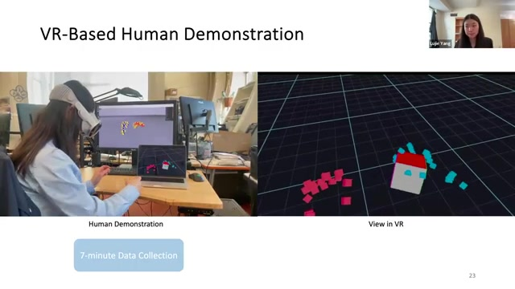
짧은 시연 수집. 발표에 따르면 각 시스템에 사용할 24개의 장기 시연을 약 7분 동안 수집했다.
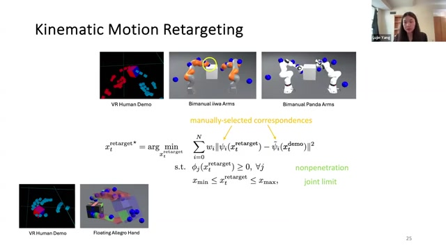
동역학 제약. 시연 추종과 제어 노력을 최적화하면서 비관통, 관절 한계, 동역학과 입력 제약을 적용한다.
같은 시연을 다른 몸과 다른 세계로 옮기는 법
단순한 운동학 재생은 목표 자세를 따라갈 수 있어도 실제 접촉력을 만들지 못할 수 있다. 특히 접촉을 지속적으로 생성하고 해제하는 과제에서는 로봇 팔 길이, 관성, 관절 배치, 물체 물성의 작은 차이가 실패를 만든다. PhysicsGen은 시뮬레이터의 time stepping을 통해 동역학을 적용하므로, 앞선 Lyapunov 연구처럼 폐형식 동역학을 요구하지 않는다.
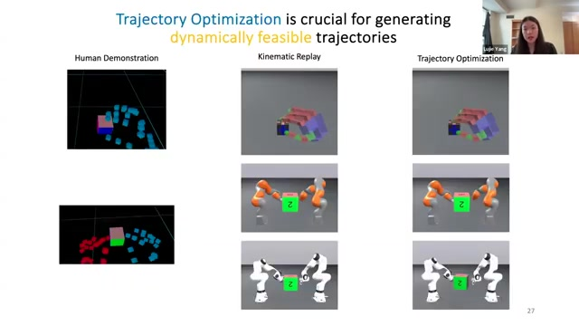
최적화 전후. Allegro 손, 양팔 iiwa, 양팔 Panda에서 운동학 재생의 실패와 최적화 이후의 성공을 비교한다.
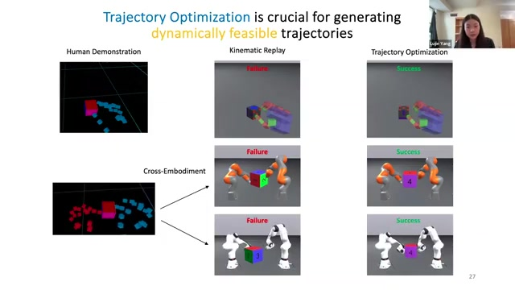
물리 분포로의 확장. 물체·로봇·초기조건을 섭동해 같은 과제의 다양한 실현 가능한 궤적을 만든다.
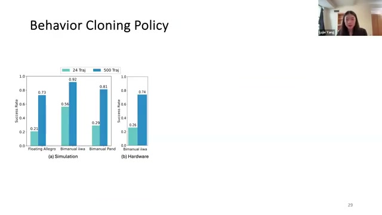
24 대 500. 증강 궤적으로 훈련한 diffusion policy가 세 플랫폼에서 더 높은 견고성을 보였다고 보고한다.
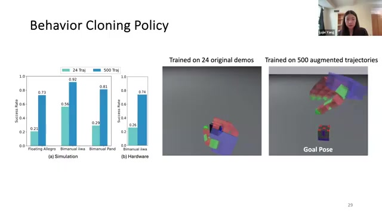
회복 행동과 sim-to-real. 증강 데이터 정책은 놓친 접촉을 다시 시도했으며, 실제 iiwa에 미세조정 없이 배치됐다고 설명한다.
Bridge Three · OmniRetarget
좌표가 아니라 상호작용을 재표적화한다
전신 로코-매니퓰레이션의 기준 모션은 사람과 로봇의 관절 위치를 닮게 만드는 것만으로 충분하지 않다. 손과 물체, 발과 지형, 몸과 장면 사이의 관계가 함께 보존돼야 한다.
기존 재표적화는 대응 keypoint를 직접 맞추면서 물체·지면 관통, foot skating, 물체와 장면의 상호작용 손실을 만들 수 있다. 이렇게 결함 있는 모션을 RL의 목표로 사용하면 학습 단계에서 수많은 보상 항과 예외 규칙으로 오류를 상쇄해야 한다. 발표자는 이 문제를 정책 학습이 아니라 원천 데이터의 기하 구조에서 해결한다.
OmniRetarget은 사람 또는 로봇의 의미 대응 관절과 물체·지형 표면에서 샘플링한 점들을 Delaunay 사면체 mesh로 연결한다. 각 꼭짓점과 이웃 사이의 상대 변위를 나타내는 Laplacian 좌표를 비교하면, 서로 다른 체형에서도 손–물체와 발–지형 관계를 부드럽게 보존할 수 있다. 정확한 접촉 라벨을 hard constraint로 지정하는 대신, 상호작용 구조의 변형을 최소화하는 방식이다.
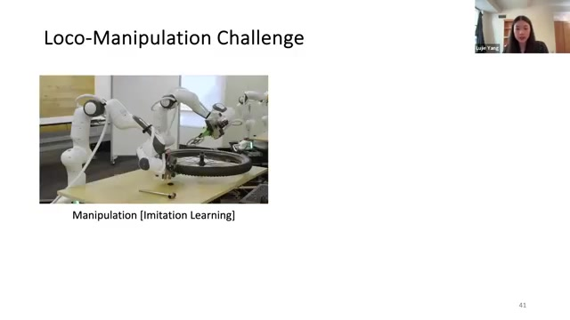
통합 문제. 조작과 이동이 서로 다른 데이터·학습 도구 사슬로 발전하면서 전신 과제의 공통 파이프라인이 부족해졌다.
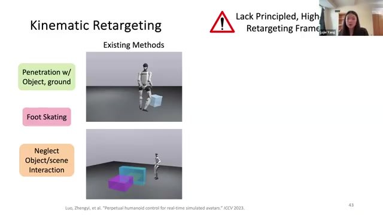
세 가지 인공물. 관통, 발 미끄러짐, 상호작용 무시를 학습 이전의 데이터 문제로 재정의한다.
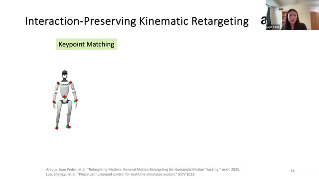
점에서 관계로. 개별 좌표의 축척 대신 몸·물체 사이의 상대적 상호작용 구조를 보존한다.
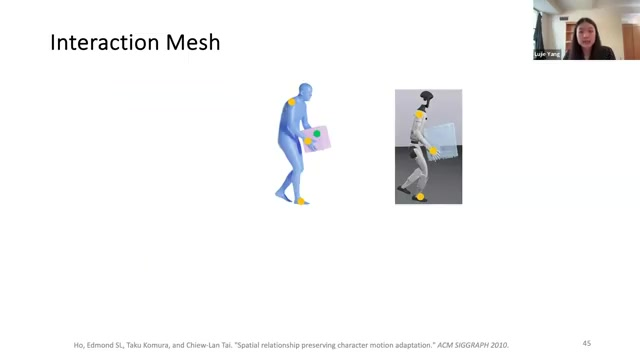
대응 mesh. 신체 keypoint와 물체·지형 표면 샘플을 연결해 source와 target의 관계 구조를 만든다.
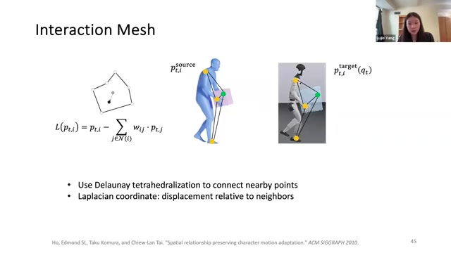
Laplacian 좌표. 한 점의 절대 위치가 아니라 이웃과의 상대적 배치를 비교해 공간·접촉 관계를 소프트하게 보존한다.
고품질 기준 모션은 보상 설계를 줄인다
OmniRetarget은 물체의 위치·회전·3축 크기, 로봇 embodiment, 플랫폼 높이와 깊이를 바꾸고 매번 최적화를 다시 해결한다. 생성된 고품질 운동학 기준은 낮은 수준의 imitation-guided RL로 전달되며, RL은 이를 물리적으로 실행 가능한 action으로 바꾼다.
기준 모션이 비관통, 관절·속도 한계, 지지발 미끄러짐 같은 문제를 먼저 제거하므로 후속 학습은 긴 보상 항 목록을 필요로 하지 않는다. 전사에 따르면 과제 공통의 proprioceptive observation과 몸 추종, 물체 추종, jerk penalty, soft joint limit, self-collision이라는 다섯 가지 보상 항만 사용했다.
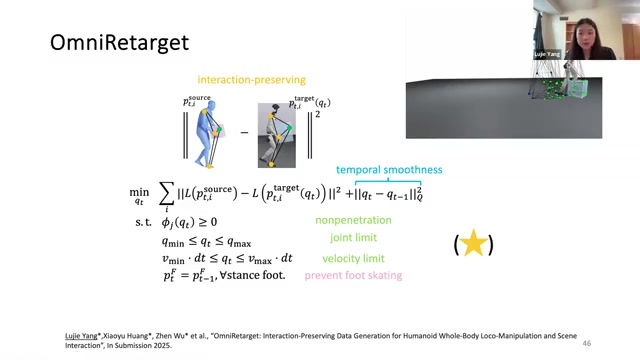
체계적 증강. 공간·형상·embodiment·지형 변화를 새로운 최적화 문제로 푼다.
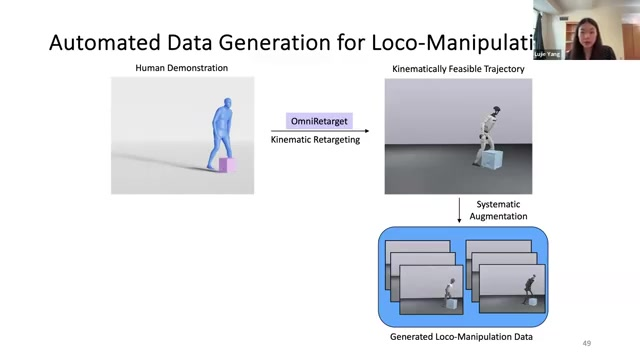
데이터 생성 파이프라인. 운동학 기준을 만든 뒤 imitation-guided RL로 실제 실행 가능한 정책을 학습한다.
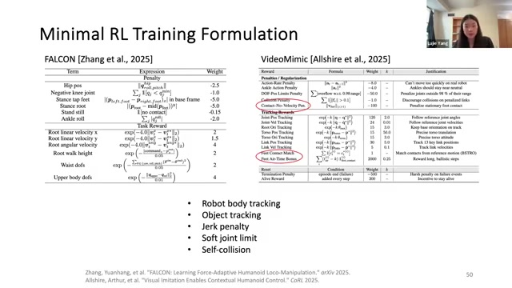
짧아진 보상식. 데이터 결함을 먼저 제거하면 학습에서 이를 상쇄할 ad hoc 보상이 줄어든다.
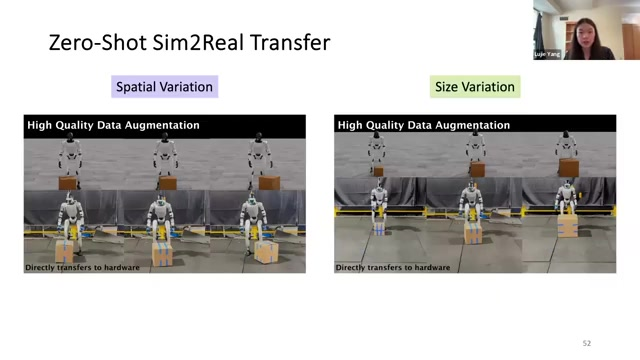
Domain randomization을 넘어. 목적별 고품질 기준을 다시 최적화해 위치·크기 변화로 zero-shot 전이했다고 보고한다.
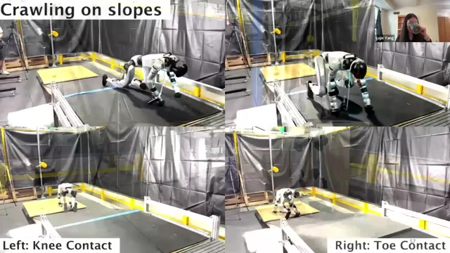
지형 상호작용. 상자 운반뿐 아니라 crawling, climbing, stepping처럼 전신 접촉이 필요한 기술로 확장된다.
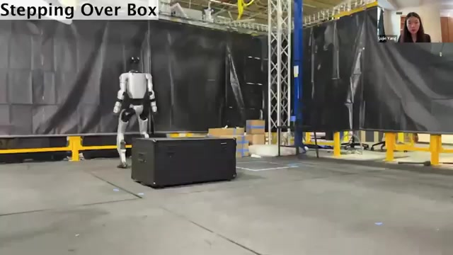
전신 동작. 프레임별 최적화와 warm start를 사용하며, 후속 RL이 동역학적 접촉 가능성을 보완한다.
Synthesis
세 다리에서 범용 데이터 생성기로
세 연구는 서로 다른 문제를 풀지만 하나의 아키텍처를 가리킨다. 상류의 인간 데이터를 모델 기반 도구로 정제하고, 하류의 학습법에 맞는 물리 데이터와 인증 신호로 변환하는 범용 계층이다.
Teleoperation, MoCap, 인터넷 영상처럼 품질과 형태가 다른 데이터 소스가 먼저 들어온다. PhysicsGen과 OmniRetarget 같은 모듈은 이 자료를 로봇 embodiment와 물리 환경에 맞는 궤적으로 바꾼다. 그 결과는 행동 복제, 강화학습, 인증서 유도 학습 등 서로 다른 하류 학습법에 공급될 수 있다.
이 비전이 중요한 이유는 데이터 규모와 embodied fidelity를 분리하지 않기 때문이다. 인터넷 영상은 세계 지식과 행동 다양성을 제공하지만, 접촉력·마찰·깊이·정확한 3D 궤적이 부족하다. 범용 생성 프레임워크는 낮은 품질의 대규모 원천을 물리적으로 일관된 로봇 데이터로 변환하는 중간층이 된다.
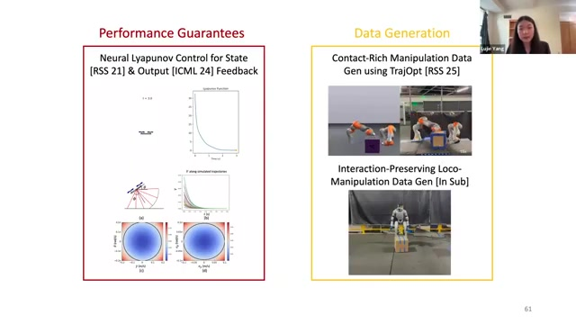
세 기여의 결론. 모델 기반 기법을 검증기, 물리 데이터 생성기, 고품질 기준 생성기로 배치한다.
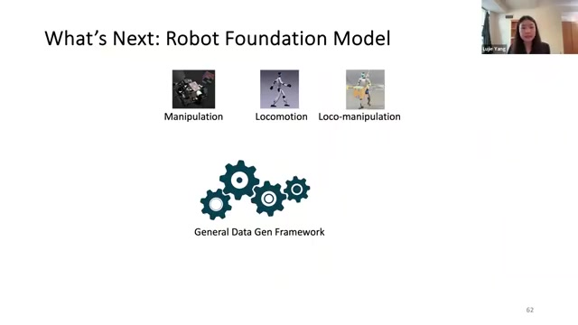
범용 프레임워크. 상류 데이터 소스와 하류 학습법 모두에 독립적인 변환 계층을 지향한다.
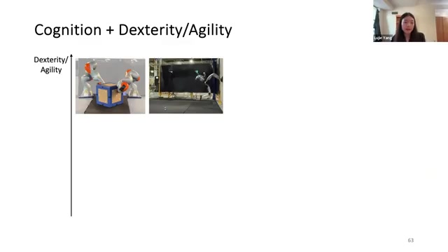
물리적 지능과 인지의 결합. 상위 VLM의 의미 계획과 하위 반응형 제어를 연결하고, 실행 결과가 다시 세계 이해를 갱신해야 한다.
| 단계 | 입력 | 핵심 변환 | 출력 | 남은 질문 |
|---|---|---|---|---|
| 원천 수집 | Teleop, VR, MoCap, 인터넷·1인칭 영상 | 행동과 장면 정보 추출 | 인간 중심 시연 | 접촉·깊이·물성 정보의 부족 |
| 구조 보존 | 인간 모션, 물체, 지형 | Interaction mesh와 기구학 제약 | 깨끗한 로봇 기준 모션 | 접촉의 암묵적 근사가 충분한가 |
| 물리 실현 | 기준 모션과 물리 파라미터 | 궤적 최적화와 systematic augmentation | 다양한 실행 가능 궤적 | 복잡한 장면에서 계산 비용과 모델 오차 |
| 정책 학습 | 증강 궤적과 관측 | BC, diffusion policy, imitation-guided RL | 회복 가능한 로봇 정책 | 시각 지각과 상태 기반 제어의 통합 |
| 보증 | 정책, 동역학, 관심 영역 | 반례 탐색과 완전 검증 | 인증된 안정 영역 | 고차원 접촉 시스템으로의 확장 |
Boundary Conditions
설득력은 적용 경계를 숨기지 않을 때 커진다
질의응답은 세 접근이 ���디까지 확장될 수 있는지를 보다 선명하게 보여준다. 아래 항목은 결과를 일반화할 때 반드시 함께 읽어야 할 조건이다.
고차원 형식 검증
휴머노이드와 사족보행까지 완전한 결정론적 인증을 확장하기는 어렵다. 정책 능력과 검증 가능성 사이의 절충이 남는다.
동역학 표현의 차이
Neural Lyapunov 연구는 폐형식 동역학을 필요로 하지만 PhysicsGen은 시뮬레이터 time stepping을 사용할 수 있다.
접촉의 암묵적 보존
OmniRetarget은 접촉점을 hard constraint로 직접 지정하지 않고 Laplacian 변형 최소화로 관계를 근사한다.
최적화 확장성
프레임별로 문제를 풀고 직전 프레임의 해를 warm start로 사용한다. 더 많은 keypoint와 표면 점을 넣을 여지는 있지만 장면 복잡도는 비용을 높인다.
인지와 제어의 양방향 연결
상위 VLM과 하위 제어의 단순 계층화만으로 부족하다. 실행 결과가 상위 모델의 세계 이해와 믿음 상태를 갱신해야 한다.
인터넷 영상의 물리 해상도
대규모 영상은 다양하지만 마찰, 깊이, 힘과 정밀 접촉 정보가 부족하다. 데이터 규모가 물리 충실도를 자동으로 보장하지 않는다.
Implications
로봇 학습 시스템을 설계하는 다섯 가지 원칙
모델을 전체 해법이 아니라 경계 모듈로 사용하라
정확한 세계 모델로 모든 것을 계획하려 하기보다 제약, 검증, 데이터 정제처럼 모델이 가장 강한 위치에 집중한다.
보상 설계 전에 기준 데이터의 결함을 점검하라
관통과 미끄러짐을 복잡한 reward shaping으로 감추면 학습 시스템이 취약해진다. 원천 모션을 먼저 수정하는 편이 재사용성과 전이를 높인다.
데이터 커버리지를 물리 파라미터 공간에서 정의하라
물체 크기·질량·마찰, 로봇 강성, 초기 상태와 지형을 포함해야 정책의 회복성과 sim-to-real을 설명할 수 있다.
접촉 작업에서는 관계 표현을 우선하라
절대 관절 좌표보다 손–물체와 발–지형의 상대 배치를 보존하는 표현이 embodiment 차이를 견디기 쉽다.
검증 실패를 데이터로 전환하라
반례를 보고서에만 남기지 않고 다음 학습 배치에 되먹이면 검증과 학습이 하나의 개선 루프가 된다.
Reader’s Takeaway
스케일링 이후의 질문은 데이터가 얼마나 많은지가 아니다
이 강연은 “더 큰 모델과 더 많은 데이터”라는 방향을 부정하지 않는다. 대신 로봇에서 규모가 의미를 가지려면 데이터가 동역학적으로 실현 가능하고, 접촉 관계를 보존하며, 정책이 실패하면 안 되는 영역을 설명할 수 있어야 한다고 주장한다.
Neural Lyapunov Control은 보증을 학습 루프에 넣는다. PhysicsGen은 소수 시연을 물리적 궤적 분포로 넓힌다. OmniRetarget은 사람과 로봇의 다른 몸 사이에서 과제의 상호작용 구조를 지킨다. 세 사례가 공유하는 메시지는 단순하다. 학습 시스템의 가장 취약한 경계에 모델 기반 구조를 삽입하면, 더 적은 데이터와 더 단순한 보상으로 더 신뢰할 수 있는 행동을 만들 가능성이 커진다.
로봇 지능의 다음 단계는 모델과 학습 중 하나의 승리가 아니라, 무엇을 학습시키고 무엇을 구조로 남길지 더 정교하게 나누는 일이다.
Source Notes & Method
출처와 작성 방법
-
주요 출처. Duke Robotics Discussion, Bridging Model-Based and Learning-Based Methods for Robotic Loco-Manipulation and Control. 발표자 Lujie Yang, 영상 길이 57분 23초, 게시일 2026년 6월 22일.
-
메타데이터.
yt-dlp --dump-single-json --skip-download로 영상 메타데이터를 수집했다. -
언어 근거. YouTube 자막 파일 요청이 HTTP 429로 차단된 뒤 전체 오디오를 로컬 Whisper
small영어 모드로 전사한 476개 시간 구간을 사용했다. -
시각 근거. 장면 변화 감지, 전사 주제 전환, 장기 정적 슬라이드 보완 샘플을 결합해 후보를 만들고 직접 검수한 33개 프레임을 유지했다.
-
해석 원칙. 화면에 직접 표시된 내용과 전사에서 재구성한 설명을 구분했다. 프로젝트명, 로봇명, 수식과 수치는 화면 근거를 우선했다.
-
제약. 접근 가능한 원본 스트림이 640×360이어서 작은 그래프와 수식의 개별 수치는 판독하지 않았다. 결과는 발표자가 제시한 실험 범위에 근거한다.